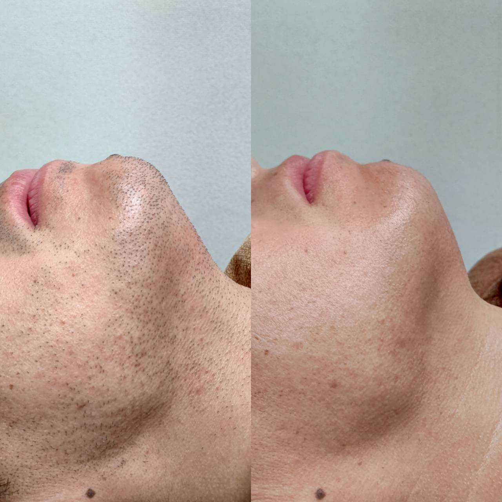

脱毛に通っていることは周りに気づかれる?施術後の見た目について

「脱毛サロンに通っていることを職場や家族に知られたくない」というご相談は少なくありません。今回は、施術当日や直後の見た目について、よくいただくご質問にお答えします。
光脱毛の施術自体は肌の表面に光を当てるだけなので、傷跡が残ったり大きく腫れたりするようなものではありません。まれに施術直後に軽い赤みが出ることがありますが、個人差はあるものの、多くの場合は数時間程度で落ち着きます。心配な方には、保湿を含めたアフターケアの方法もあわせてご案内しています。
ご来店の服装やタイミングについても、周囲の目が気になる方には配慮しています。施術は個室で行うため、他のお客様と顔を合わせる機会も最小限です。予約時間を工夫すれば、お仕事帰りや休憩時間を利用して通うことも可能です。
「知られたくないから始められない」という理由で悩まれている方も多いですが、通い方や時間帯を相談しながら、無理なく続けられる方法を一緒に考えています。気になる点は無料カウンセリングでご相談ください。